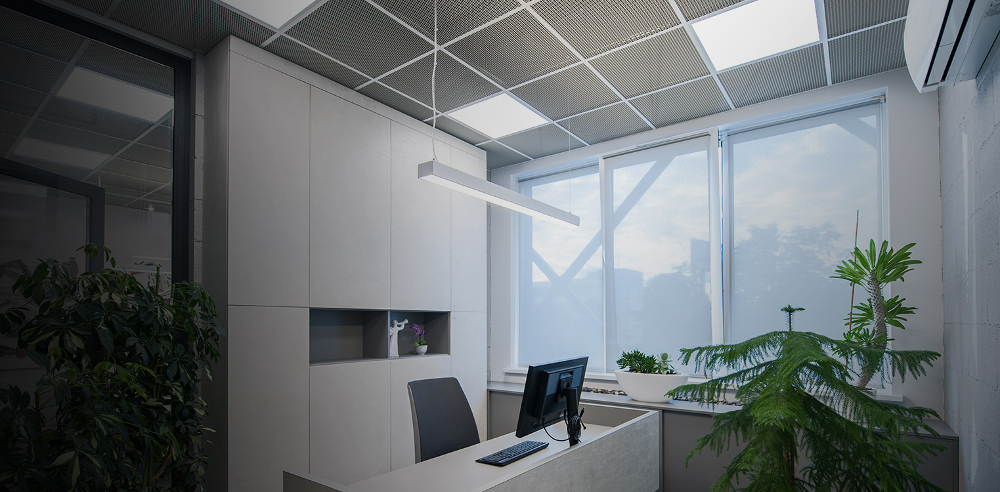
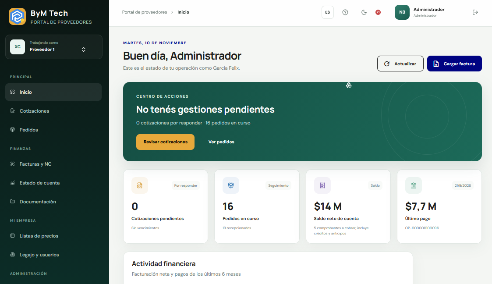
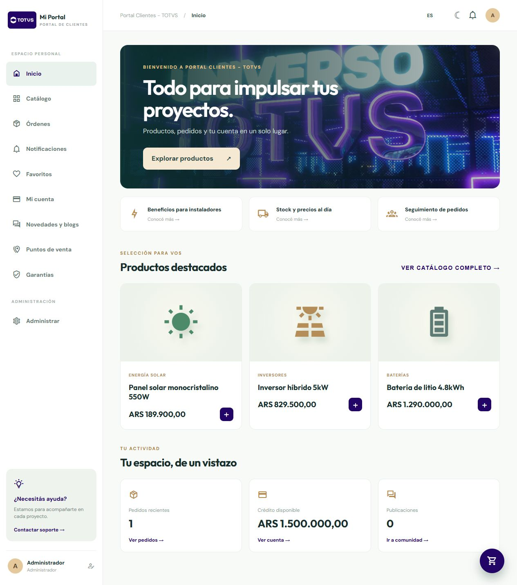
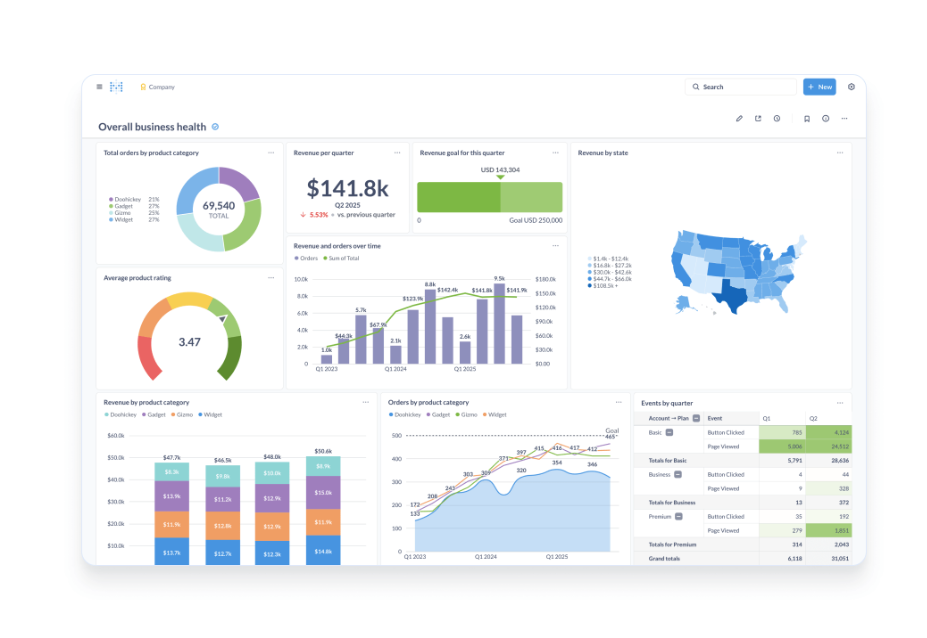

Aplicaciones y portales
Experiencias internas, B2B y B2C conectadas con sistemas existentes.
Diseñamos aplicaciones, portales, APIs y automatizaciones alrededor del negocio, incorporando IA cuando aporta velocidad, control o una mejor decisión.

Experiencias internas, B2B y B2C conectadas con sistemas existentes.
APIs, procesos, conectores y capas de interoperabilidad entre plataformas.
Lectura, clasificación, asistencia y decisiones controladas sobre datos reales.



Proceso, usuarios, restricciones y resultado esperado.
Alcance, experiencia y arquitectura.
Iteraciones funcionales y validación frecuente.
Soporte, métricas y nuevas capacidades.
No necesitás llegar con una especificación: empezamos por el problema y el resultado buscado.